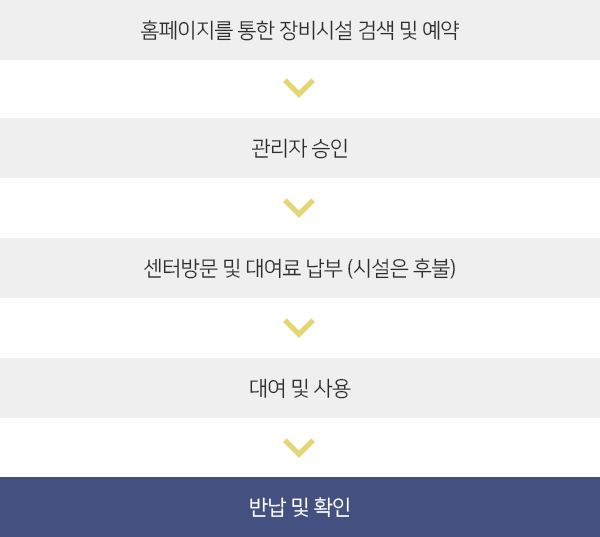
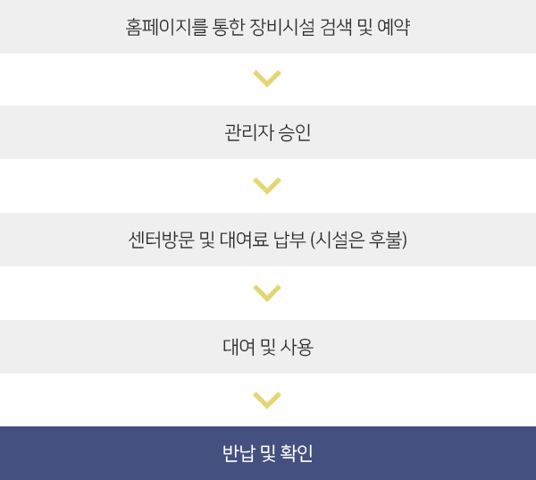

창작지원
장비대여
이용시간
- 월·화·목 10:00 ~ 17:00 / 수·금 10:00 ~ 21:00 / 토 10:00~17:00 (점심시간 12:00~13:00 저녁시간 18:00~19:00 제외)
- 휴관일은 대여와 반납이 불가능합니다.
- 이용시간은 센터사정에 따라 조정될 수 있습니다.
대여안내
- 정회원만 대여 가능합니다. 회원안내 바로가기
- 대여절차
 

- 이용일 30일전부터 이용일 1일전까지 대여 신청
- 대여 및 반납은 본인이 직접 하며 대여 당일 신분증, 주민등록등본 (3개월 이내 발행)을 제출하여야 합니다. 제출한 서류는 반납 시 폐기 또는 반환합니다.
- 장비 대여료는 1박2일, 시설 대여료는 시간당 이용금액이며 현장에서 카드와 현금결제가 가능합니다. (온라인 결재는 불가능 합니다.)
- 장비를 반납 하고자 하는 일자가 휴관일이면 다음날 10시까지 반납하는 것을 원칙으로 하며 추가 대여료는 부과하지 않습니다.
- 장비 및 시설 이용 신청자의 운용능력과 이해가 미숙하여 기자재 운용이 부적절하다고 판단되거나 기타 미디어센터 운영상의 사유로 대여가 불가능한 경우 대여 승인을 거부할 수 있습니다.
- 자세한 사항은 수원미디어센터 운영·관리규정 세부지침안 참조 세부지침 다운로드
예약 취소 및 변경
- 예약일 기준으로 전일까지 본인이 직접 센터 홈페이지에서 취소 및 변경 신청이 가능하며 당일 취소 및 변경은 불가합니다.
- 다음 예약자가 없는 경우 1회에 한하여 대여 기일과 시간 연장이 가능하며 장비의 최대 연장기일은 5일까지이고 시설은 센터 대여시간까지 가능합니다.
- 대여기일 연장은 반납시간 전까지 센터 홈페이지, 직접 방문 또는 전화연락을 통해서 가능합니다.
- 별도의 연장 신청이 없거나 정당한 사유 없이 연체했을 경우 10% 연체료가 부과됩니다.
환불규정
- 센터의 특별한 사정에 따라 사용이 취소 또는 정지되거나 재해, 천재지변 그 밖에 불가항력적인 사유로 사용이 불가능한 경우 : 전액환불
- 신청자는 신분증을 제시하고 본인 통장사본을 제출해야 합니다. 가족이 대리하여 신청하고자 하는 경우 등본이나 가족관계증명원, 의료보험증 등을 제시하여야 합니다.
유의사항
- 장비와 시설 대여는 영리 목적으로 사용하실 수 없습니다. (상업영화, 광고, 웨딩촬영 등의 상업적인 사용이나 재임대등의 목적으로 대여불가)
- 문의 : 031-280-6343